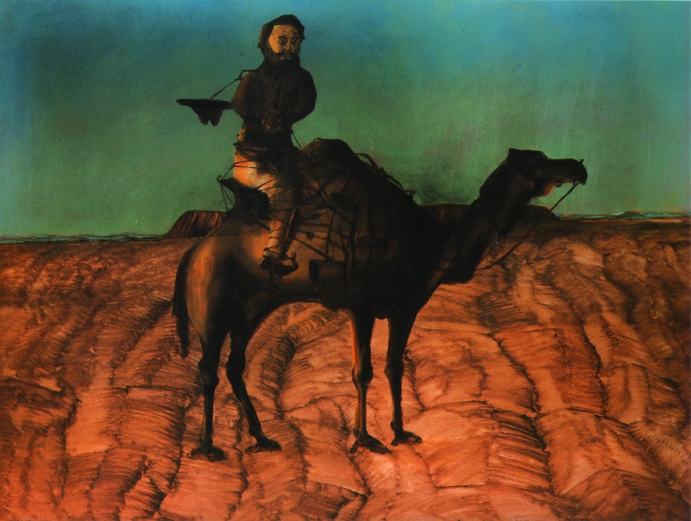

Бородатый всадник привязан
веревкой к спине верблюда, его
руки стиснуты, лицо напряжено.
Атмосфера безжалостной жары и
духоты передастся безоблачным
синим небом пустыни
и грядами высохшей земли. В
августе 1860 года группа из восемнадцати человек отправилась
из Мельбурна с целью в первый раз пересечь всю Австралию.
И хотя экспедиция достигла
своей цели, она была очень плохо
организована и завершилась катастрофой. Один из
исследователей, Чарльз Грей,
страдал от сильной головной боли и
дизентерии, его пришлось
привязать к седлу верблюда; он
умер ранним утром 17 апреля
1861 года. В 1949 году Нолан
отправился из родного Мельбурна в Квинсленд, чтобы
запечатлеть жизнь участников той
экспедиции и суровую силу природы.
Художник также исполнил серию картин с изображением известного беглого преступника Неда Колли. Нолан широко признан как лидер современно австралийской живописи.